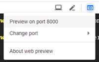
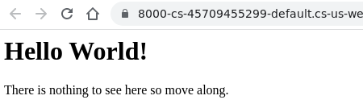
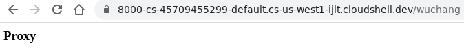
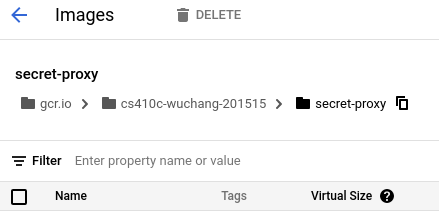
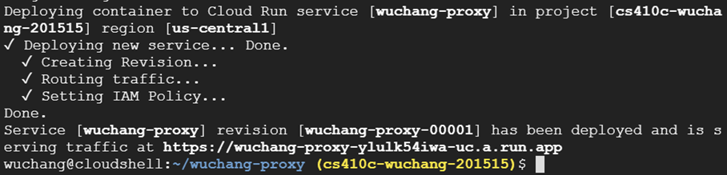
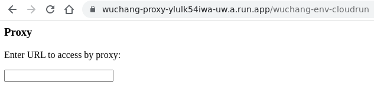
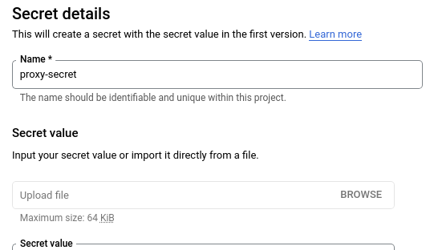
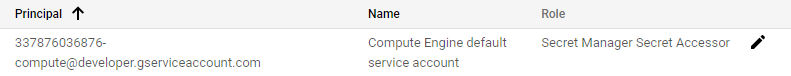
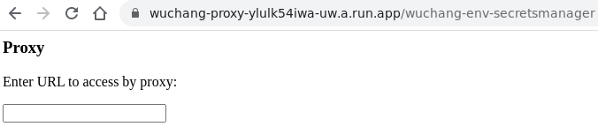

Cloud Run is a service on Google Cloud Platform that supports serverless deployments of containers. You provide the container image and it runs it. Much like serverless platforms with App Engine, the infrastructure is hidden and is autoscaled to meet demand. In contrast to the restricted set of environments supported by App Engine, Cloud Run gives a developer the flexibility to run any environment that they can supply in a container, something that is highly desirable for those with a reasonable understanding of building containers for their applications. In this lab, we will incrementally build a container and deploy it onto Cloud Run. The application we will build is a secret web proxy that could be used to bypass web filters.
The code for the application will be structured as shown below:
secret-proxy/
├── app.py
├── Dockerfile
├── requirements.txt
└── templates
└── proxy.html
In Cloud Shell, first create the top-level and templates directory. Change into the top-level directory.
mkdir -p secret-proxy/templates
cd secret-proxyCreate the application using the code below:
from flask import Flask, redirect, request, url_for, render_template
import requests
import os
app = Flask(__name__)
@app.route('/')
def page():
return "<html><body><h1>Hello World!</h1>Nothing to see here. Move along.</body></html>"
secret_proxy_route = os.getenv('SECRET_PROXY_ROUTE')
if secret_proxy_route:
@app.route(secret_proxy_route)
def proxy():
if 'url' not in request.args:
return render_template('proxy.html')
else:
return requests.get(request.args['url']).textAs the code shows, it implements a trivial "Hello World" landing page for the '/' route. It also creates a secret proxy route only if the environment variable SECRET_PROXY_ROUTE is set in the operating system running the application. The secret proxy route looks for a URL parameter called url from the incoming request (request.args['url']) and, if it exists, retrieves its contents using the Python requests package (requests.get). If the URL parameter does not exist, it renders the proxy's default page.
Create the template HTML file that implements the functionality of a proxy in retrieving the URL passed to it. The proxy works by taking the URL entered in by the user and retrieving the proxy URL with the URL parameter url set to the form input.
<h3>Proxy</h3>
<p>Enter URL to access by proxy:</p>
<input id=url_input></input>
<script>
var input = document.getElementById("url_input");
input.addEventListener("keyup", function(event) {
if (event.keyCode === 13) {
event.preventDefault();
url = input.value
window.location.href = "{{ url_for('proxy')}}?url=" + url;
}
});
</script>Create the Python requirements file to install the packages needed for the application. Flask performs the routing for the web application, requests performs the retrieval of the URL, and gunicorn runs the Python application as a stand-alone server.
flask requests gunicorn
The Dockerfile is shown below. Before beginning, change the maintainer to specify your own name and e-mail address. As the file shows, the container we create
/app/appFinally, the last line specifies the command to run the Python/Flask app using the PORT environment variable to specify the port number to use. app:app instructs gunicorn to look for the entrypoint in app.py and that within that file, an object called app will handle the incoming requests.
FROM python:3.7-slim LABEL maintainer="yourname@pdx.edu" COPY . /app WORKDIR /app RUN pip install -r requirements.txt CMD gunicorn --bind :$PORT --workers 1 --threads 8 app:app
We will first build the container locally to validate that it works. Change into the directory containing your Dockerfile. Then run the docker build command to build the container image.
docker build -t secret-proxy-image ./Run the container image in Cloud Shell, passing in the port you wish the container to use via the PORT environment variable within the docker run command to specify 8000. (Note that when we run the container image in Cloud Run, Cloud Run will automatically supply the PORT environment variable to the container.) The docker run command uses the -p flag to map the Cloud Shell port 8000 to the container port 8000 and uses the -di flag to run the container in a detached mode in the background. We name the container instance running proxy.
docker run --env PORT=8000 -p 8000:8000 --name=proxy --rm -it secret-proxy-imageWithin the Cloud Shell UI, click on the Web Preview icon and preview the application. Change port to 8000 if necessary:

Verify that the container and application has been brought up successfully.

Then, stop the container instance via Ctrl+c. The --rm flag will automatically delete the container instance.
In order for the secret proxy to be created in our application, we must set the SECRET_PROXY_ROUTE environment variable. To do so, modify the docker run command to set this environment variable to /OdinID. (e.g. /wuchang). Bring up the Web Preview again and visit the secret proxy route. Enter the URL https://oregonctf.org .

Answer the following question for your lab notebook.
Stop the container instance and then delete the container image from Cloud Shell.
docker rmi secret-proxy-image
We have been building container images locally via docker build and pushing the resulting image to a public container registry (e.g. Docker Hub) via docker push. In modern DevOps deployments, it is often the case that developers require an automated way to build artifacts in a CI/CD pipeline and a container registry that is private to the project that provides secure, high-speed delivery of container images.
GCP provides two services to support this:
gcr.io prefix.Cloud Run prefers to run images from Container Registry. Building the image in Cloud Build and storing it in gcr.io can be done with a single command. Run the command in Cloud Shell in the same directory as the Dockerfile (substituting your name) to build the container.
gcloud builds submit --tag gcr.io/${GOOGLE_CLOUD_PROJECT}/secret-proxy
When finished, list the container images in the registry.
gcloud container images list
Then, visit Container Registry in the web console and click on the image you have created.

Launch the container on Cloud Run from Cloud Shell by completing the command below, using the --update-env-vars flag to set the secret proxy route environment variable (e.g. <KEY>) so that its value brings up the secret proxy on the following route /OdinID-env-cloudrun (e.g. --update-env-vars=SECRET_PROXY_ROUTE=/wuchang-env-cloudrun).
gcloud run deploy secret-proxy \
--image gcr.io/${GOOGLE_CLOUD_PROJECT}/secret-proxy \
--platform=managed --region=us-west1 --allow-unauthenticated \
--update-env-vars=...You should get back a URL that has your container running on it.

Visit the secret proxy route on the container. Note that because the container must be started up on-demand for the first time, there will be a slight delay on first access to it.

Finally, remove the environment variable on Cloud Run by re-deploying with the following flag.
gcloud run services update secret-proxy \
--remove-env-vars=SECRET_PROXY_ROUTE \
--region=us-west1Reload the proxy route again to show its removal.
In large cloud projects containing a multitude of secrets such as API and encryption keys, it is important that developers have a way to revoke, update, or rotate secrets when needed. For example, if an API key for an external service that a project uses in a dozen different places is compromised, it would be helpful if the developer could change the key in a central location and have the new key propagate to each place it is being used. The Secret Manager service, found within the "Security" section on Google Cloud Platform, provides such centralized secret management to projects and can be used to store API and encryption keys.
We will now repeat the deployment, but rather than have the secret proxy route passed in directly to Cloud Run, we'll store the value of the route in the Secret Manager and then pass a reference to it to Cloud Run. To begin with, visit the API library and enable the "Secret Manager API". We'll then create a secret named 'proxy-secret' and set its value to /OdinID-env-secretmanager, substituting your OdinId as before e.g. /wuchang-env-secretmanager). After creating the secret, we'll then configure Cloud Run to be able to access it. Both steps can be done via the web UI or via the gcloud SDK
Within the Secret Manager console, create the secret and set its value to the route.

The secret can now be used across our Google Cloud project as 'proxy-secret'. However, in order to access secrets from Cloud Run, the default service account that Cloud Run uses (Compute Engine's default service account), must be given the Secret Manager Secret Accessor role. Visit IAM in the console, find the service account, and add the role to it.

One can perform the operations with gcloud in Cloud Shell. Adapt the command below to create the secret in Secrets Manager with the name proxy-secret. The command performs an echo then pipes the value into standard input of the gcloud command to create the secret. Since the gcloud command is set up to pull the command from a file, we set the filename to '-' in order to specify standard input.
echo -n "/OdinID-env-secretmanager" | gcloud secrets create proxy-secret --data-file=-Next, obtain the Compute Engine default service account from the project, setting it to a shell variable.
COMPUTE_DSA=$(gcloud compute project-info describe --format="value(defaultServiceAccount)")Then attach a policy assigning it the role to view secrets project-wide.
gcloud projects add-iam-policy-binding ${GOOGLE_CLOUD_PROJECT} \
--member serviceAccount:$COMPUTE_DSA \
--role roles/secretmanager.secretAccessorPerform the deployment again, but rather than setting the environment variable directly, instead use the --update-secrets flag to specify the environment variable should instead be set to the value of the latest version of proxy-secret (e.g. proxy-secret:latest) set in the previous step.
gcloud run services update secret-proxy \
--update-secrets=SECRET_PROXY_ROUTE=proxy-secret:latest \
--region=us-west1Visit the new secret proxy route URL.

Enter https://google.com
Attempt to access the Metadata service associated with the VM that runs your container by entering the following URLs into the proxy http://169.254.169.254/computeMetadata and http://169.254.169.254/computeMetadata/v1. Read this article and this article.
Although Cloud Run has a generous free tier, it is good practice to remove resources that are not being used.
Alternatively, you can also delete these resources in Cloud Shell via:
gcloud run services delete secret-proxy --region=us-west1
gcloud container images delete gcr.io/${GOOGLE_CLOUD_PROJECT}/secret-proxy
gcloud secrets delete proxy-secret